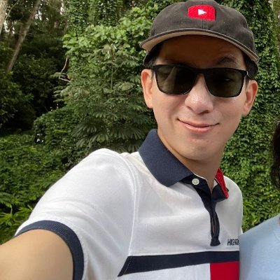

Jason Lee
I am a Principal Scientist and Director at Salesforce, where I work on Voice Agents for Slack.
I started my professional career in the autonomous driving industry, training state-of-the-art object recognition models and shipping them to hundreds of thousands of customers at Tesla Autopilot. I then had a brief stint at the Office of the CTO at Cruise where I provided technical advice to the CTO/CEO, helping shape technical strategies and answer long-term strategic questions.
I obtained my Ph.D. in Machine Learning from New York University, where I spent five years training neural networks under the guidance of Kyunghyun Cho. My thesis focused on non-autoregressive generation of sequences using latent variable models and iterative refinement. During my studies, I was supported by Qualcomm as one of the first European Innovation Fellows .
